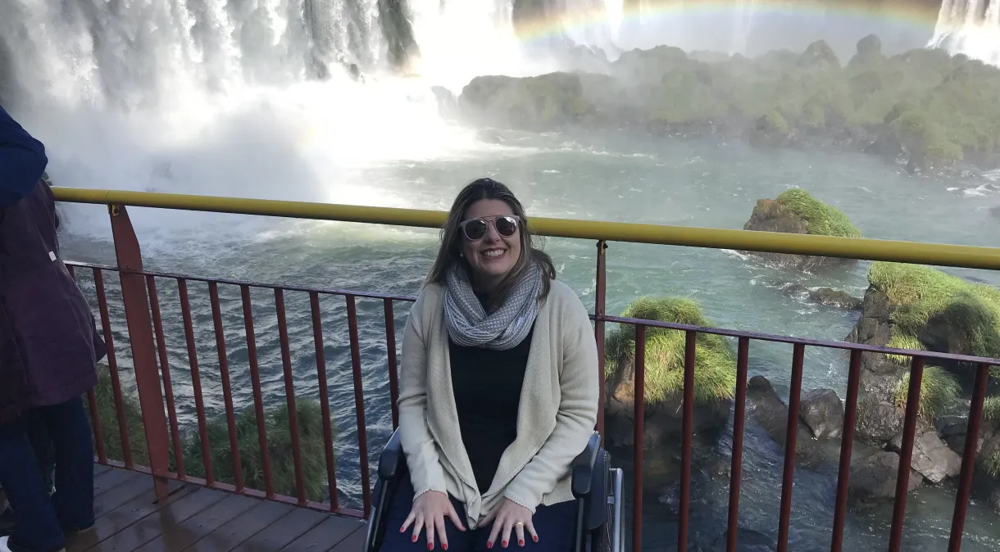

O turismo acessível garante que todas as pessoas, com ou sem deficiência, possam viajar com autonomia e conforto. Ele vai além de rampas e banheiros adaptados, envolvendo transporte, hospedagem e atrações preparadas para diferentes necessidades. Destinos como Orlando, Barcelona e Rio de Janeiro são exemplos de como a inclusão no turismo é possível, com infraestrutura adequada e serviços especializados. A chave está na informação clara e no planejamento cuidadoso, permitindo que cada viajante viva experiências completas, sem limitações. Viajar é um direito de todos, e o turismo acessível torna esse direito real, promovendo inclusão e enriquecendo a experiência de descobrir o mundo.
Destinos Acessíveis

Foz do Iguaçu oferece passeios com segurança e acessibilidade para cadeirantes